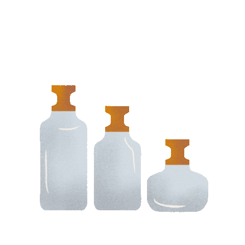
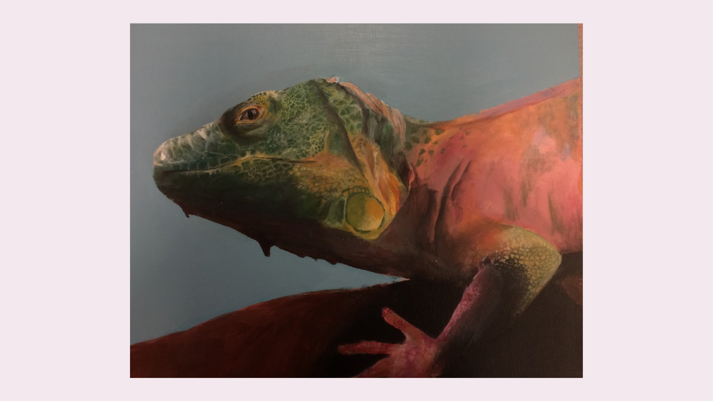
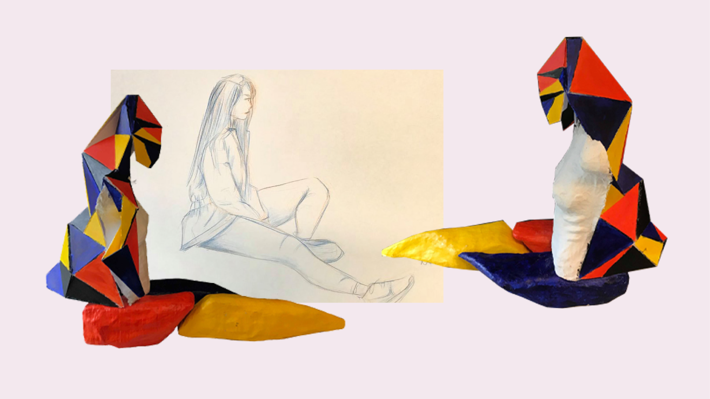
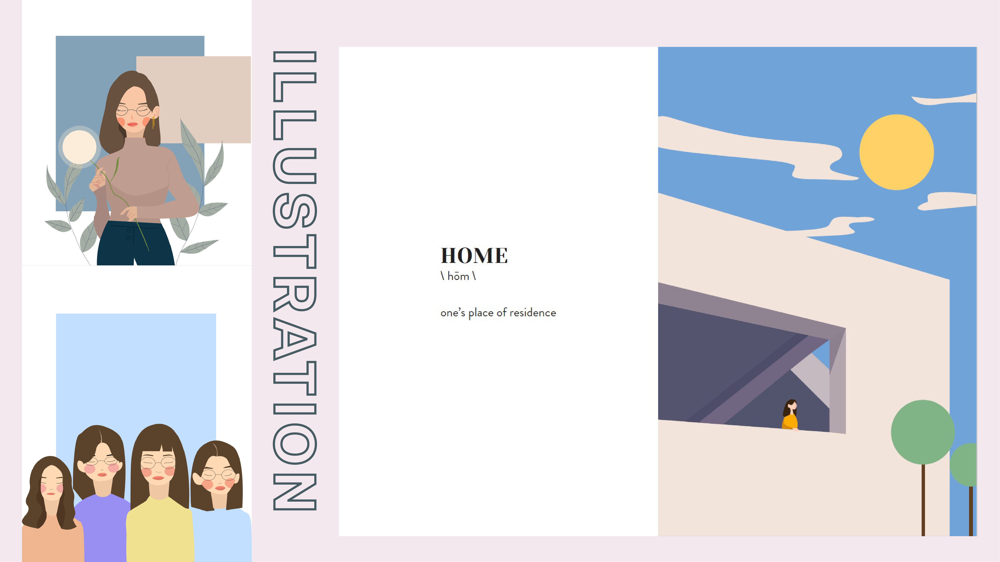
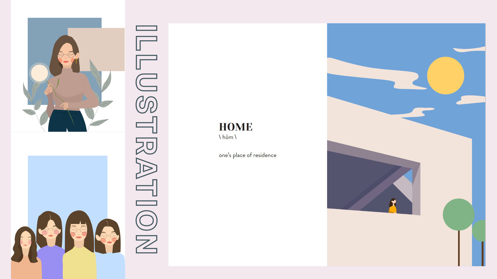
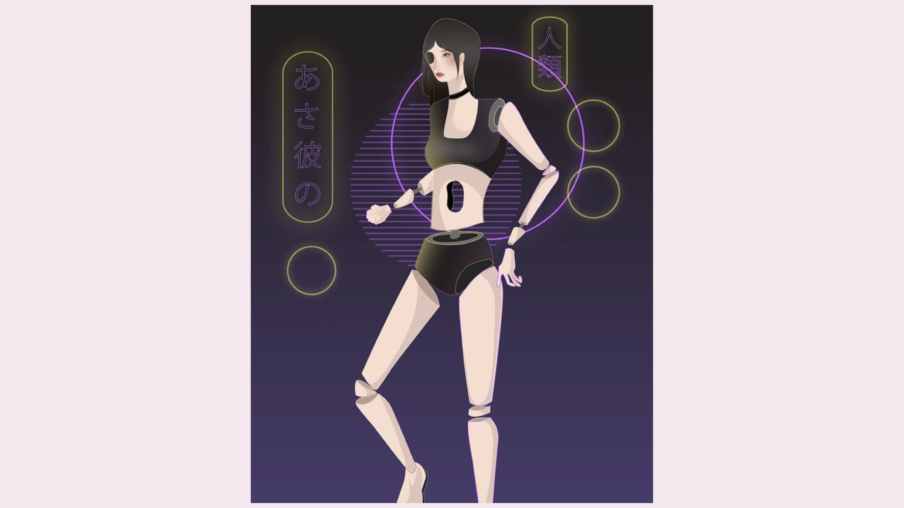

CREATIVE PORTFOLIO
This creative portfolio showcases some of my favourite artworks produced throughout the last 5 years and documents my creative process and artistic developments. I love to explore and test out a various types of mediums, from acrylic paint, to sculpting 3D models, to digital media. I learned to utilize my creativeness, exhibiting them traditionally and digitally.
I hope you enjoy my art :)
traditional.
Traditional art includes any artwork made with physical conventional media
such as drawings, paintings, 3D sculptures and etc. I started my creative
journey with traditional art, prior to learning digital media.
A V A R I C E

Oil Paint on Canvas
20’ X 18”
October, 2019
P I Q U E

Mixed Media on Canvas
(acrylic paint, newspaper, ink, modelling paste)
20’ X 18” (left) 8” X 16” (right)
November, 2019
L I Z A R D
Topographic Model
20’ X 30” X 10"
January, 2020
S I S T E R H O O D

Acrylic Paint on Canvas
12’ X 12”
May, 2019
R E D S E A

Topographic Model
16’ X 20”
March, 2018
S P I K E S
Abstract Figure Sculpture
24" X 36” X 7”
October, 2019
digital.
During my time in CyberARTs, I not only got the opportunity to enhance my
traditional art skills, but also incorporate my designs using digital media. I
started my journey with digital art
early on, gaining plenty of experience and
knowledge.
H O M E
 

Illustration-Photobook
Adobe Illustrator
Adobe Indesign
Adobe Lightroom
January, 2020
G L O O M J O Y
Film
Adobe Premiere Pro
October, 2022
A S A K A N O

Character Design
Adobe Illustrator
April, 2019
C Y B E R A R T S B R O C H U R E

Informational Brochure
Adobe Illustrator
October, 2019
S A V O U R

Brand Packaging
Adobe Illustrator
Adobe Indesign
December, 2019